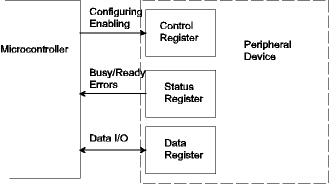
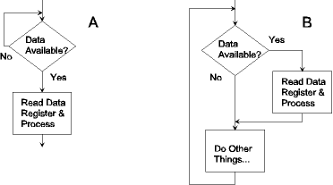
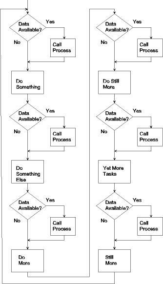
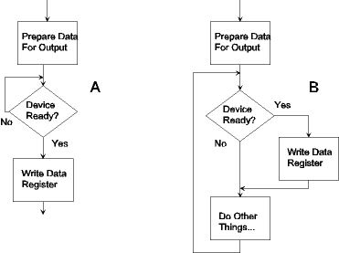

| Previous Section | Next Section | Index | Questions | Search the Text |
Performing input and output requires accessing peripheral devices, reading and writing their registers. These peripheral devices can either be on the microcontroller chip or off the chip and accessed via busses. There are two approaches to accessing these devices.
In the earliest approach, special instructions are used for peripheral accessing. Each peripheral device register is assigned a unique port address. The port addresses are not related to memory addresses. While data and addresses may travel on the same busses as memory accesses, one or more control signals indicate that the transfer is I/O rather than memory. The processor has input and output instructions which transfer data between a CPU register and the specified port.
The more recent approach is to map peripheral devices into the memory address space. Any instruction which accesses memory can be used to access the peripheral device registers. This is the approach taken by the 68HC12 and 68HCS12 families of microcontrollers. All internal peripheral devices have registers with addresses mapped within a 1024 byte address range which Freescale calls the Register Block. This register block appears in Section 1.6 of the MC9S12DP256B Device Users Guide. External peripheral interfaces are connected to the memory buses and must respond to their assigned addresses. This will be discussed in the section External Memory/Peripheral Interfacing.
There are three basic types of peripheral registers.
Control registers are used to configure the operation of the peripheral. Control registers can always be written, however not all control registers can be read (all 68HCS12 control registers can be read). Reading a control register yields the same values that were written into the control register. Individual bits or fields of bits (a field is one or more adjacent bits) are given distinct functions, so bit manipulation instructions (example: bset, bclr) are typically used to change these registers.
Status registers are used to observe the status of the peripheral. Such information may include if the device is active, has data to transfer, is requesting to receive data, or is indicating an error condition. Status registers can always be read. Writing to a status register either does nothing or has some special effect. Only the peripheral itself knows its status, so status register bits cannot be written directly by the processor. As with the control registers, individual bits or fields of bits are given distinct functions. Status is often checked using the brset or brclr instructions.
Sometimes a single register has some bits dedicated to control and others to status. In other cases, a single register may be a status register when read and a control register when written, with different meanings assigned to each bit. For this reason it is very important to thoroughly study the documentation of a peripheral before attempting to use it.
Data registers are used to transfer data to and from the peripheral. An input device provides data to the microcontroller, and the data register is read to obtain the data. An output device takes data from the microcontroller and sends it out; in this case the data register is written to send the data out. Data registers used for output are often write-only and data registers used for input are often read-only. This allows a register address to be used for both an output and an input register. Again, it is important to study the documentation for the particular peripheral interface to see how it is designed.
Typically we don't refer to the actual addresses of the registers but instead use symbolic names. This makes the programs easier to understand, plus also protects the code from any hardware changes since only the symbol definitions would need to be updated. When using an assembler, the provided file registers.inc contains all the register address symbol definitions. It is incorporated into the program by placing the line
#include registers.inc
at the start of the program. This file contains other useful definitions as well as the register addresses. A similar technique is used for programs written in high level languages.
The simplest way of handling I/O is via polling. For an input device, when data is expected the status register is checked to see if input data is available. If so, then the data register is read and the data is processed. Reading the data register provides room for new data to come in. Unless some form of handshaking is used (as explained in Handshaking for Synchronization) it will be necessary to read the current byte of data before the next byte comes in. This condition is called buffer overflow and will cause data to be lost.
If data is not available when polled, the program can either wait for the data to become available, or perform some other task and then poll again. These two alternatives are shown in the flow chart:

If we wait for data, alternative A, then nothing else can be done. This is an acceptable technique if there is nothing else to do, but probably would not be a good idea for a keyboard input controlling machinery - the machinery could not be controlled while waiting for user input! If we use alternative B, then the machinery could be controlled while waiting for that user keystroke.
But some inputs require quick response (response time is referred to as latency), or occur at a fast rate, in which case we risk buffer overflow. Technique B will fail if Do Other Things takes too long - the latency of A is the time it takes to poll the device, while that of B might be as long as the time to poll plus the time to execute Do Other Things. If we know when the data will arrive or we know the wait will be short, technique A may be acceptable. But how do we minimize latency and still do other things while we wait?
The solution is to check the status of the peripheral at various points in the program. If at any point the peripheral indicates that it needs servicing (data available for input or requesting data for output) then a subroutine is called to handle it.
Let's consider an example using the 68HCS12 Serial Communications Interface. When a byte of data is received from outside the microcontroller, the status register SC0SR1 bit called RDRF (bit 5, which is mask value $20) gets set. At this time the data register, SC0DRL can be read to obtain the data. The action of reading SC0DRL will automatically reset RDRF, which will be set again when the next byte arrives. If we want to wait for the data to arrive, the code to poll the flag and read the data is:
l1: brclr SC0SR1 #$20 l1 ; wait if no data
ldaa SC0DRL ; get data byte
process data byte; (do what we need to do with the data)
If we use a subroutine and multiple polling locations, the polling code is:
brclr SC0SR1 #$20 l1 ; branch if no data
jsr process ; process data if present
l1:
while the process subroutine is:
process:
psha ; Save original contents of A
ldaa SC0DRL ; get data byte
process data byte;(save/restore other registers as needed)
pula ; Restore contents of A
rts
The important consideration in the placing of the polling code is this: if RDRF is signaled but another byte arrives before the current byte is processed, then data will be lost. The polling code must be placed at enough locations in the program so as to prevent data loss. Assuming we are successful, we may have many occurrences of the code, each consuming ROM locations. We also waste time checking for data arrival when no data has arrived. There must be a better way! The way is interrupts.
An interrupt is basically a subroutine call which is forced by hardware, rather than invoked by a bsr or jsr. With a few exceptions, an interrupt can happen between instructions at any place in a program. Using interrupts is equivalent to polling at each instruction, but without any time or space overhead. The subroutine called by interrupts is called an interrupt service routine.
Using interrupts requires some initial configuration. First, the peripheral device must be capable of generating interrupt requests and the ability to issue such requests must be enabled for that device (this is done by setting control register bits). When the peripheral's request is acknowledged by the processor, the peripheral provides the processor with an interrupt vector address. The interrupt vector is a memory location which contains the address of the interrupt service routine. The programmer is responsible for setting the contents of the vector location to be the address of the routine. The processor then calls the interrupt service routine.
Since an interrupt can occur anywhere in the program, it is important that the contents of all the processors registers be preserved during the execution of the interrupt routine. This must be done either by the programmer or for some processors, the 68HCS12 included, happens automatically. In the 68HCS12, the A, B, X, Y, and CCR registers are saved on the stack, along with the return address. All registers must be restored at the end of the interrupt service routine. The rti instruction in the 68HCS12 restores all registers and returns to the instruction which was about to be executed when the interrupt occurred. This instruction is used instead of rts in an interrupt service routine.
In our serial communications interface example, the interrupt vector address is $FFD6. So that word location would need to be initialized with the address of our new interrupt service routine, SC0ISR. The interface would need to be configured to cause an interrupt when a byte arrives. This process will be described in detail in later sections. Finally, the interrupt service routine would need to be provided:
SC0ISR:
ldaa SC0DRL ; get data byte
process data byte ;(save/restore other registers as needed)
rti
SC0ISR will be called whenever a byte arrives. No polling is necessary. The interrupt latency is the time it takes to finish the current instruction and invoke the interrupt service routine. Since this time include pushing all the registers on the stack, it's much longer than the original polling approach A, but typically far less than the other polling approaches, and there is no time wasted polling the device when there is no data available.
Suppose we don't want to process the data byte at the time the data arrives, but want to process it elsewhere. In that case we need to buffer the data. Buffering techniques are discussed in the section on the Serial Communications Interface.
With an output device, when we have a byte to send out we wait for the output device to be ready, then we store the byte in the data register. This causes the output device to operate and output the data. When the data has been successfully transmitted, the output device will again indicate it is ready. We have the same choice between waiting for the device to be ready or doing something else while waiting.

The tradeoffs are the same as for input devices; however instead of worrying about buffer overflow, we might be concerned about data not being sent fast enough. This is not an issue when driving a display, but might be if we are controlling a servo positioner. Again if latency is an issue, we probably would want to use interrupts. The interrupt service routine can either calculate the next value to output, or can obtain values sequentially from an array. In the latter case, this is called buffered output. Again, buffering techniques will be discussed in the section on the Serial Communications Interface.
The 68HCS12 provides a number of peripherals on-chip, as well as allowing for off-chip peripheral interfaces. The exact set of peripherals depends on the particular version of the 68HCS12. In this course we are using the MC9S12DP256B. Full details of the on-chip peripherals are provided in the MC9S12DP256B Device Users Guide. The following on-chip peripherals are available, and are covered in this text:
Now we will start examining the 68HCS12 on-chip peripherals, starting with the most basic interface, general purpose I/O pins and parallel ports.
But first, lets look at some electrical issues. Continue with Electrical Characteristics.
Return to the Index.